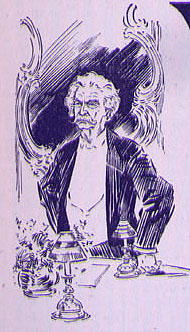

Birthday Wishes from Around the CountryMISS CUTTING thereupon read the following letter from President Roosevelt: Sincerely yours, [signed] THEODORE ROOSEVELT MISS CUTTING read the following greetings: on His Seventieth Birthday Greetings and Good Wishes. And now, that the days of your years are threescore years and ten,[signed] AMELIA E. BARR December 5, 1905. I owe to Mr. Clemens many hours of agreeable recreation, and to take the census of the honest laughs he has given me is beyond my arithmetical capacity, and really nowadays, although many people may be able to interest you with what they write and a few be competent to generally amuse, a man, the music of whose mirth covered the whole gamut of the comic from the most delicate humor to side-shaking fun, is very, very rare. Your guest has been for many years a tremendous contribution to the gayety of nations, but, beyond that, he has given us such an ideal example of manly honor in the conduct of life that we have doubly to thank the man who, I hope, enjoys his own capacity to produce a laugh as much as does the world which shares with him the joy of what he has given so freely. Yours very truly, [signed] WEIR MITCHELL. This to M.T.; With my affectionate esteem, W.M.So large the joy your pen has given, Back of the New, with its filmy veil,[signed] VIRGINIA FRAZER BOYLE There is no man in the world that has won in a worthier way the right to be honored in all ways. Having no purpose to do so, he has written the great American novel; without at all intending it, he has set for the young men in this age of commercialism, greed, and graft, a far-reaching example of simple, old-fashioned honesty; and following the suggestions of a heart almost too big for one body, he is the friend and champion of all who are poor and oppressed, and especially of those who have no voice to speak in their own behalf. Shams shrivel before him, and friendship takes on a new color -- a new meaning -- when he is concerned in it. Just give him the love of an old Georgia cracker, and say that I should like to be there. Faithfully yours, [signed] JOEL CHANDLER HARRIS. If there's any way to do it, if there's any way to find Any trail that leads to Boyland and its fancies, would you mind Going back to where Tom Sawyer is with Huckleberry Finn, And reminding them we're waiting for more trouble to begin? If there's any way to find them, with their laughter and their song, Will you go, -- and, while you're going, take a lot of us along? You must know where they are staying. Can't you let the nations slide And get up a big excursion to the place where they abide? Let us quiver with the purest, unadulterated joy Of another introduction to a sure-for-certain boy. If there's any way to find them, we are all prepared to grin When Tom Sawyer comes to greet us, leading Huckleberry Finn. If there's any way to find them at their old familiar pranks, There's a million of us ready to declare a vote of thanks; There's another million ready to be tickled through and through At the thought of once more knowing what those youngsters say and do. If there's any way to reach them! You know where they've always been -- Won't you go and find Tom Sawyer, and call Huckleberry Finn? We'd be mighty glad to see them; we should count it splendid luck, Could we find another volume introducing Tom and Huck, With their fishing, and their fighting, and their freckles, and their fun, -- And we'd chuckle through the pages, and we'd sigh when it was done! Can't you let the nations ramble in their blindness and their sin And renew our old acquaintance with Tom Sawyer and Huck Finn? [signed] WILBER D. NESBIT Mirth is forever young, and laughters leap[signed] LOUIS MORGAN SILL. MISS CUTTING read the following cablegram: "The undersigned send Mark Twain heartiest greetings on his seventieth birthday and cordially wish him long life and prosperity: Sir William Anson; T. Anstey Guthries (F. Antey); Alfred Austin, poet laureate; Rt. Hon. Arthur Balfour; J. M. Barrie; Augustine Birrell, Kt.; Rt. Hon. James Bryce; Sir Francis Burnand, editor of Punch; Gilbert Chesterton; Churton Collins; W. L. Courteney; Austin Dobson; Sir Arthur Conan Doyle; W. S. Gilbert; Edmund Gosse; Francis Carruthers Gould; Thomas Hardy; Anthony Hope; W. W. Jacobs; Rudyard Kipling; Ian Maclaren (Rev. John Watson); W. H. Mallock; George Meredith; Henry Norman; M.P.; Sir Gilbert Parker; Sir John Tenniel, illustrator of Alice in Wonderland; Sir George Otto Trevelyan, historian; Mrs. Humphry Ward; William Watson; Theodore Watts-Dunton; Israel Zangwill; Tauchnitz. |